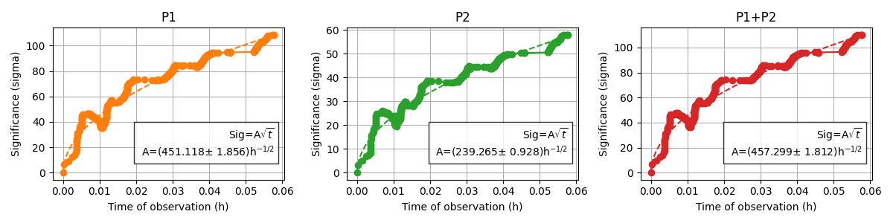
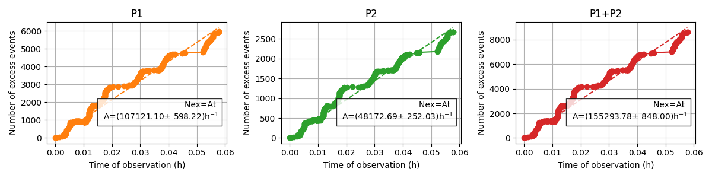
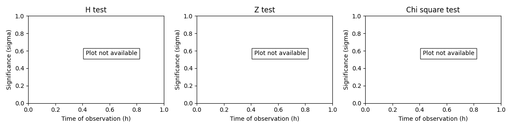
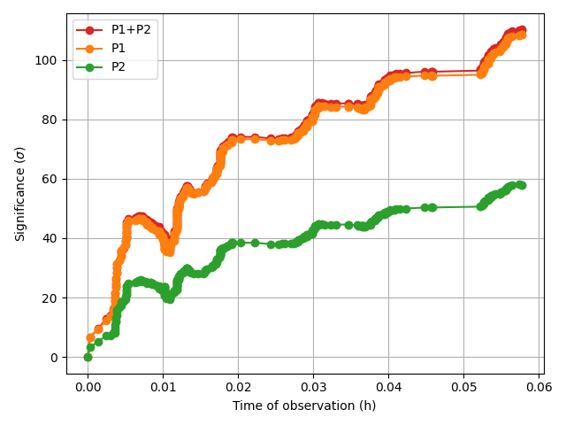
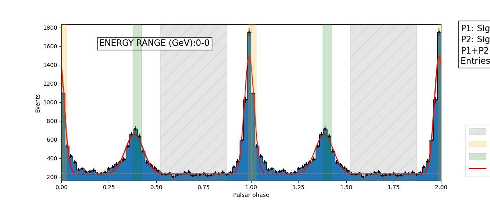
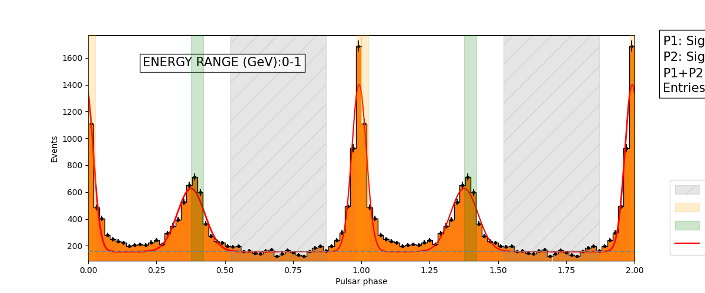

Note
Go to the end to download the full example code.
Basic pulsar analysis using Fermi-LAT data#
7 from ptiming_ana.phaseogram import PulsarAnalysis
8 from astropy.io import fits
9 import numpy as np
10 import matplotlib.pyplot as plt
11
12 # sphinx_gallery_multi_image = "single"
Create the PulsarAnalysis object and settings#
18 h = PulsarAnalysis()
19 h.set_config('./example_data/config_tutorial.yaml')
Alternatively we can set the parameters directly#
25 h = PulsarAnalysis()
26 h.setBackgroundLimits([0.52,0.87])
27 h.setPeaklimits(
28 P1_limits=[0,0.026, 0.983, 1],
29 P2_limits=[0.377, 0.422],
30 P3_limits=None
31 )
32 h.setBinning(50, xmin=0, xmax=1)
33 h.setTimeInterval(tint=3600*24)
34 h.setFittingParams(model='dgaussian', binned=True)
35 h.setEnergybinning(
36 np.geomspace(0.1/1e3, 1/1e3, 3),
37 do_diff=True,
38 do_integral=False
39 ) # in TeV
Extracting phases, times and energies from file and give them to the object#
For Fermi data there is a class to read these lists and use them in the main object.
48 h.setFermiInputFile('./example_data/merged2_pulsar.fits')
But in general we can read our file (FITS, DL2, DL3…) and extract phases, times and energies as lists and read them as follows:
55 f=fits.open('./example_data/merged2_pulsar.fits')
56 fits_table=f[1].data
57
58 times=np.sort(fits_table['BARYCENTRIC_TIME'].byteswap().newbyteorder())
59 phases=fits_table['PULSE_PHASE'].byteswap().newbyteorder()
60 energies=fits_table['ENERGY'].byteswap().newbyteorder()
61
62 h.setListsInput(phases, times, energies/1e6, tel='fermi', energy_units='TeV')
63
64 h.get_results = False
Run the code#
71 h.run()
/home/runner/work/PulsarTimingAnalysis/PulsarTimingAnalysis/src/ptiming_ana/phaseogram/phase_regions.py:226: RuntimeWarning: divide by zero encountered in scalar divide
self.sign_ratio = self.sign / np.sqrt(tobs)
Show the results#
Overall results#
81 phaseogram=h.draw_phaseogram(
82 phase_limits=[0, 2],
83 colorhist='xkcd:baby blue'
84 )
85 plt.tight_layout()
89 results=h.show_Presults()
RESULTS FOR THE PEAK STATISTICS:
P1 P2 P1+P2
Significance 108.591359 58.006568 110.165719
Nex 5959.237143 2677.271429 8636.508571
Nex_error 84.220286 62.208240 105.936656
Number 6969.000000 3734.000000 10703.000000
noff 1009.762857 1056.728571 2066.491429
sign_t_ratio 451.841088 241.361292 458.391889
s/n ratio 187.534413 82.358927 189.985915
P1/P2 ratio=2.23+/-0.06
RESULTS FOR THE PERIODICITY SEARCH:
Chi_square_test Zn_test H_test
Statistic 2.697743e+04 2.599217e+04 2.810141e+04
p-value 0.000000e+00 0.000000e+00 0.000000e+00
Number of $\sigma$ inf inf inf
Result of the fitting#
97 h.fit_model
'dgaussian'
100 fit_result = h.show_fit_results()
Name Value Error
0 mu 0.992423 0.001566
1 sigma 0.026305 0.001470
2 mu_2 1.376341 0.004402
3 sigma_2 0.050986 0.004192
4 A 466.437500 0.000000
5 B 200.237289 10.903034
6 C 145.133366 11.041673
103 phaseogram = h.draw_phaseogram(
104 phase_limits=[0, 2],
105 colorhist='xkcd:baby blue',
106 fit=True
107 )
108 plt.tight_layout()
Results vs Time#
115 TimeEv = h.show_timeEvolution()
- 
- 
- 
- 
The periodicity tests are not available since the signal is too strong (p_value too low to extrapolate a significance).
Results vs Energy#
127 h.show_lcVsEnergy()
- 
- 
[<Figure size 1200x500 with 1 Axes>, <Figure size 1200x500 with 1 Axes>]
130 energy_lc=h.show_all_lc(ylimits=None)

133 energy_results=h.show_EnergyPresults()
Energies(GeV):0-0
RESULTS FOR THE PEAK STATISTICS:
P1 P2 P1+P2
Significance 64.283110 32.326941 64.254439
Nex 2329.814286 994.642857 3324.457143
Nex_error 53.751332 39.787330 67.825823
Number 2828.000000 1516.000000 4344.000000
noff 498.185714 521.357143 1019.542857
sign_t_ratio 621.192620 312.387765 620.915556
s/n ratio 104.382013 43.561167 104.116125
P1/P2 ratio=2.34+/-0.11
RESULTS FOR THE PERIODICITY SEARCH:
Chi_square_test Zn_test H_test
Statistic 9894.812087 9539.380325 1.016913e+04
p-value 0.000000 0.000000 0.000000e+00
Number of $\sigma$ inf inf inf
-------------------------------------------------------------------
Energies(GeV):0-1
RESULTS FOR THE PEAK STATISTICS:
P1 P2 P1+P2
Significance 72.157101 39.603539 73.624074
Nex 2428.965714 1109.057143 3538.022857
Nex_error 53.037924 38.897574 66.437898
Number 2771.000000 1467.000000 4238.000000
noff 342.034286 357.942857 699.977143
sign_t_ratio 753.379730 413.493661 768.696142
s/n ratio 131.336840 58.620170 133.726878
P1/P2 ratio=2.19+/-0.09
RESULTS FOR THE PERIODICITY SEARCH:
Chi_square_test Zn_test H_test
Statistic 1.236040e+04 1.193614e+04 1.290660e+04
p-value 0.000000e+00 0.000000e+00 0.000000e+00
Number of $\sigma$ inf inf inf
-------------------------------------------------------------------
136 energy_plots=h.show_EnergyAna()
Fit vs Energy#
143 mean_energy_plot=h.show_meanVsEnergy()
144
145 h.show_EnergyFitresults()
Energies(GeV):0.10-0.32
Name Value Error
0 mu 0.990064 0.001285
1 sigma 0.025658 0.001199
2 mu_2 1.384944 0.003914
3 sigma_2 0.048394 0.003781
4 A 231.375000 0.000000
5 B 80.804887 3.667207
6 C 51.361385 3.643919
-------------------------------------------------------------------
Energies(GeV):0.32-1.00
Name Value Error
0 mu 0.991737 0.001711
1 sigma 0.026729 0.001598
2 mu_2 1.376496 0.004604
3 sigma_2 0.050032 0.004348
4 A 156.375000 0.000000
5 B 83.366327 4.920670
6 C 58.966419 4.808841
-------------------------------------------------------------------
[ Name Value Error
0 mu 0.990064 0.001285
1 sigma 0.025658 0.001199
2 mu_2 1.384944 0.003914
3 sigma_2 0.048394 0.003781
4 A 231.375000 0.000000
5 B 80.804887 3.667207
6 C 51.361385 3.643919, Name Value Error
0 mu 0.991737 0.001711
1 sigma 0.026729 0.001598
2 mu_2 1.376496 0.004604
3 sigma_2 0.050032 0.004348
4 A 156.375000 0.000000
5 B 83.366327 4.920670
6 C 58.966419 4.808841]
Total running time of the script: (0 minutes 19.008 seconds)